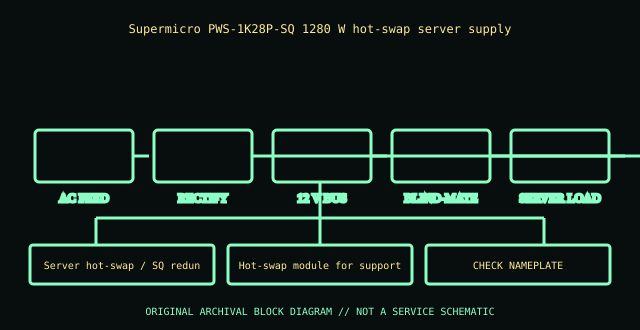

[ POWER CONVERSION // IDENTIFIED MODEL ]
Supermicro PWS-1K28P-SQ 1280 W redundant PSU
Supermicro PWS-1K28P-SQ 1280 W hot-swap server supply. This record applies only to the model and generation named here; similar wattage or connector shape does not establish equivalence.

HIGH-VOLTAGE WARNING: Disconnect mains before external inspection. Never open a PSU. Internal capacitors may retain lethal charge after unplugging. Do not probe or repair its interior; use qualified service or replace the unit.
Model-specific ratings & fit
| Manufacturer identity | Supermicro PWS-1K28P-SQ 1280 W hot-swap server supply |
|---|---|
| Form factor / generation | Server hot-swap / SQ redundant module |
| AC input | 100–127 V AC, 12 A (1000 W maximum); 200–240 V AC, 9 A (1280 W maximum), 50/60 Hz. |
| DC output | +12 V 107 A, +5 V standby 4 A; 1280 W maximum at 200–240 V and 1000 W at 100–127 V input. |
| Dimensions / mounting | Hot-swap module for supported Supermicro server chassis only; proprietary backplane slot, not ATX. |
| Connectors | IEC mains inlet and Supermicro blind-mate high-current connection. Verify the exact chassis/board and redundancy matrix. |
| Revision distinctions | PWS-1K28P-SQ must not be conflated with similar 1K28P suffixes or other revisions; connector fit alone is not compatibility. |
Compatibility & safe installation
- Confirm complete model, suffix, region and revision against the unit nameplate and manufacturer manual. Do not substitute by wattage or connector-shell appearance.
- Verify AC range, per-rail and combined DC ratings, line derating, pinout, dimensions, cooling direction and qualified host support.
- Modular cables have model- and revision-specific PSU-side wiring. Use only approved leads for this exact PSU; a plug that fits may have a dangerous pinout mismatch.
- For redundant/hot-plug modules, follow the host service manual, redundancy requirements and supported replacement procedure. A server blind-mate module is not an ATX supply.
- Never open or probe a PSU. Retire damaged, wet, burnt, corroded, modified or unidentified units.
Revision & archival notes
PWS-1K28P-SQ must not be conflated with similar 1K28P suffixes or other revisions; connector fit alone is not compatibility.
Record the model suffix, airflow, output label and qualified host list; service only per Supermicro system documentation.
Archive the complete nameplate, part/spare number, manufacturing date/revision, region, connector/cable labels, mounting orientation, source document and its issue date. Separate label transcription from testing.
Manufacturer references
- Supermicro PWS-1K28P-SQ 1280 W redundant PSUSupermicro PWS-1K28P-SQ 1280 W hot-swap server supply. Use the exact product manual/system matrix; regional SKUs and later hardware revisions may differ.
- Intel ATX / ATX12V Power Supply Design GuideStandards reference for desktop ATX only. Server hot-swap and Flex Slot interfaces are proprietary and not interchangeable by generic ATX guidance.
Manufacturer label and applicable model/system manual take precedence over this summary.